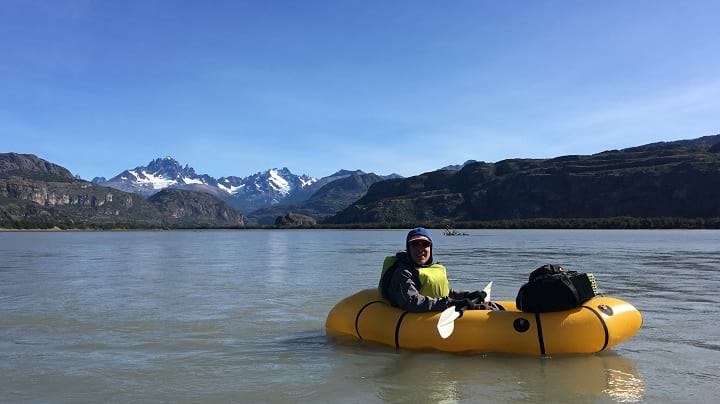

Greater Patagonia Trail Section Guide
Introduction
The Greater Patagonia Trail (GPT) is a network of hiking trails, settlement routes, dirt roads, lakes, rivers, and fjords spanning approximately 3,000 km across Chile and Argentina. Created by hiker/adventurer Jan Dudeck, it is extremely new and unofficial.
During our December 2017 to March 2018 GPT hike, my hiking partner, K, kept detailed notes of all the conditions we faced and logistics we encountered.
Since returning home, she has reviewed and revised her notes, turning them into something of a “section guide” for an otherwise undocumented trail. Her writing covers Sections 16-40 of the GPT, paying special attention to packrafting and alternates that we followed. Unless otherwise noted, all words in this guide are her own.
With her permission, I have published this content online, incorporating pictures where possible to bring each section to life.
For anyone looking to take this guide with them into the backcountry, here is a smartphone-friendly PDF.
If you have any feedback or updated information, please let me know so we can update the guide!
Section Guide
Preface: A Note from the Author
Hello!
The intent of this guide is to provide information about trail conditions, camping options, information about relevant towns, and on-trail services offered by locals. It assumes that the hiker is carrying a GPS for navigational purposes and therefore does not provide step-by-step direction. This guide is not complete with timetables of transportation options nor prices of goods/services offered along this route because of their variable nature. The best resource for obtaining this information is the local people, so study your Spanish!
Gaia GPS was the smartphone app utilized for navigation during our hike from December 2017 to March 2018. MapBox Outdoors HD was the map layer I used and concurs with all of the names and places referred to herein.
Although this guide is geared towards packrafters traveling from north to south, it does cover a good portion of the Regular Hiking Route which we followed when packrafting was implausible due to weather or other externalities. For a variety of reasons, some parts of this guide are incomplete.
Another important note: some of the packrafting described within is challenging. Prior knowledge on how to read and safely run a river with Class I-II rapids and multiple obstructions (e.g., large boulders, trees, gravel bars, etc.) is a must.
Finally, I ask that anyone with updated information please send it my way so that I can update this guide for future hikers. By no means is this document perfect, but hopefully it will provide a decent starting point for anyone wanting to undertake this wild adventure. Jan Dudeck, creator of the Greater Patagonia Trail, has reviewed and contributed to this document in multiple places.
Jan’s words are colored red.
Section 16: Volcán Quetrupillan
Follow the main road, 199-CH, south out of Curarrehue until the gravel road turn off, S-981. After several kilometers, the road transitions to single track through a eucalyptus forest. Be careful to not follow one of the several other tracks that wind through the forest. The trail exits onto a gravel road, S-947, that follows Estero Huilico. Turn off onto a 4WD track, but be aware there are several other 4WD track spurs. The trail narrows into an obvious single track as you enter Parque Nacional Villarrica. Be prepared for the possibility of snow during this section at higher elevations. At treeline the trail ends and the cross-country traverse begins.
The entrance to the reserve. Typical fencing you will encounter every day on the GPT.
This cross-country traverse follows the volcanic landscape at the base of Volcán Quetrupillán. During high snow years, Laguna Blanca may be frozen and snow covered. Be aware that snowpack may make parts of the GPS route difficult, and keep safety in mind when choosing a route. Instead of following the recommended route which ascends through a chute, snowpack forced us to climb up to a pass further to the left and then rejoin the route. Depending on the time of year, Laguna Azul may also be frozen, but water is available at the stream crossing at the southern end. After beginning the descent into the forest, try and find a well maintained trail. The trail joins a dirt road, T-447, which continues until the paved highway, 201-CH, to Carringue.
Snowy crosscountry travel
Fording the outlet of Laguna Azul.
Town: Carriringue
Carriringue is a tiny town with a small market which offers snacks but is difficult to resupply out of. There are also several signs advertising Cabañas.
Section 17P: Neltume
The GPT does not go through Carriringue, but if you do decide to go into town the route is easy to rejoin by walking south along the paved road, T-29, to Río Liquiñe. There is an established campsite (5.000 CLP/night) which is part of the Red de Turismo Rural where the paved road crosses the river. This campsite has flush toilets, cold showers, and trash.
Tarp pitched at the rural campsite near the Río Liquiñe.
The Río Liquiñe is windy and narrow. Pay attention to the several semi-submerged fallen trees that litter the river. The packrafting portion of this section ends with a 4 km paddle along the eastern shore of Lago Neltume. There’s easy access to the road, T-29, the entire time, but camping is improbable due to the abundance of private property. At the end of the lake paddle, there is an established campsite (5.000 CLP/night). This site has flush toilets and trash.
On the Río Liquiñe with the packrafts. For SOBO travelers, this is the first real packrafting opportunity.
Alternate Route
At this point, the recommended packrafting route turns off T-29 onto a gravel road. DO NOT TAKE THIS ROUTE. It eventually leads to a river that is now impassible due to a destroyed bridge. An alternative is to continue along T-29 until reaching the highway, 203-CH. Follow this highway through Neltume all the way to Puerto Fuy. Although the recommended packrafting route turns off of the highway after Neltume, on the ground it was unclear where this turnoff was. We decided to road walk all the way to Puerto Fuy.
Jan: Last season and this season three parties attempted to follow this route (RP-MRV@17P-25.1). Two turned back, while one made it over the river mentioned above. The safest option is currently not to take the regular route (track RP-MR-V@17P-25.1) but stay on the main road taking Variant “H” (track OP-PR-V@17P-H-#).
Town: Neltume/Puerto Fuy to Panguipulli
Neltume has options for lodging, a few restaurants, and a bus to Panguipulli—the closest large town for resupply. Ask a local for directions to the bus stop and about arrival times.
At Puerto Fuy, there were several signs advertising lodging. However, it would be difficult to resupply here.
Jan: I recall about half a dozen mini shops in Puerto Fuy that are sometimes hidden in the side roads. It’s best practice to resupply in the first bigger shop you find on the route (i.e., Neltume) and try in the next village to purchase what you did not get in the first place (i.e., Puerto Fuy).
Section 18: Lago Pirihueico
Before Beginning
We were halted by rangers in a jeep on the 4WD road on the west side of Río Pillanleufu. They informed us it was illegal to be in Huilo Huilo at this time because the reserve was closed for the rehabilitation of the Pudú, the world’s smallest deer. We had no knowledge of this since we entered the reserve in a very remote location and there was not adequate signage to inform us of this closure. After explaining this to the ranger, they escorted us out of the reserve. You may want to enquire about the status of Huilo Huilo before beginning this section.
Signs marking the closed off area that we saw while exiting the Huilo Huilo. There were no legible signs at the entrance.
Jan: This was publicly accessible land with public roads until the Petermann clan took control of this vast property during the final year of the Pinochet dictatorship. Huilo Huilo is not advertised as a “private for profit reserve” with very expensive high-end lodging but wood logging continues in parts of this property. Several hikers reported that they were stopped by guards and sent or escorted out. It remains unclear if the right-of-way legally ended or if the new owner simply wants to keep people out that don’t spend lots of money.
—
GPT18 begins with a 23 km paddle on Lago Pirihueico, a long, remote, serpentine lake. There are almost no residences along the shoreline of Lago Pirihueico, but there are some beaches suitable for camping. A ferry also runs from Puerto Fuy to Puerto Pirihueico at the southern end of the lake several times a day. You can find more information about the ferry and make reservations here: https://barcazahuahum.com/en/schedule-and-prices/.
Exploring the coast line along Lago Pirihueico.

A different perspective of the wide expanse that is Lago Pirihueico.
The take-out is not obvious, and we relied on our GPS to guide us to the spot. A short walk up is a 4WD track that leads into the Reserva Biológica Huilo Huilo. The track is overgrown and littered with downed trees but becomes clearer and easier to navigate as it ascends. The views are gorgeous as the 4WD track climbs above treeline.
As the route nears the roaring Río Pillanleufu, it reduces to a single track trail. The trail meanders on the east shore of the river and eventually disappears. We backtracked a bit and made our way down to the east river bank which we followed until we picked up the trail in a large meadow. A bridge is located where the GPS track is shown crossing over the Río Pillanleufu to the west side and joining a 4WD road. The vegetation on this side of the river is thick and camping is hard to come across.
Bridge over the Río Pillanleufu.
About 10 km from the bridge crossing, the 4WD track ends in an impenetrable bamboo forest. We backtracked and headed down to the west bank of the Río Pillanleufu where we found a horse track that eventually led back to the main route. The route follows easy grade farm roads until exiting onto T-559. T-559 is a windy gravel road which makes for an easy road walk all the way to Lago Maihue and the end of GPT18.

Look at the size of those plants! Bushwhacking ~100 yards from the end of the 4WD track to the river bed was less than pleasant.
Town: Futrono
Futrono, about a 40 minute drive from where the route joins T-559, is the nearest large town. It has a variety of restaurants and lodging options and is a good place to resupply. There is no central bus station in Futrono, but there is a gas station at the east end of town where you can pick up a bus that will take you back to the trail.
Section 19: Volcán Puyehue
GPT19 begins at the northeastern end of Lago Maihue. The regular hiking route follows T-559, a nice road with beautiful overlooking views of the lake, for many kilometers. Less than a kilometer after the GPS track turns east to contour the north bank of Río Hueinahue, the track turns off of T-559. There is no trail at the turn off, continue cross country until reaching the road on the other side. Be careful crossing this river! At high water, it may be a good idea to walk the few extra kilometers to the T-559 bridge crossing. The river is wide and the river bed was slippery.
Crossing Río Hueinahue, a wide and slippery ford.
Soon after rejoining T-559 on the south side of Río Hueinahue, turn right onto T-537 and begin to steeply climb. After about 2 kilometers, the road reduces to a very rutted trail with occasional spurs and limited camping. The route joins a gravel road T-567, for about 27 km until the turnoff onto Camino a Predio Contrafuerte, a smaller gravel road. After about 16 km, the road ends at a residence that the GPS route apparently goes right through. This house belongs to Nari and Hector, a wonderful older couple who are very used to hikers coming through their property on their way to Volcán Puyehue. Don’t be too alarmed with the barking dogs, go in and introduce yourself!
Visiting Nari and Hector, two of the kindest folks you will meet on the GPT.
From Nari’s house, there is NO WATER until halfway down the descent of Volcán Puyehue!! It may be possible to grab a drink from some melting snow but don’t count on it during low snow years. Climb a wide rut up the hill behind Nari’s house. The rut reduces to single track and continues to climb through an open forest with plenty of places to camp. After reaching treeline, the trail disappears. You may see the occasional cairn or footprint, but for the most part this is cross-country travel until treeline on the south side of the volcano. The landscape through this section is alien and breathtakingly beautiful.
Endless snowfields and volcanic rock above treeline.
Volcanic rock still steaming from recent activity. Fortunately, you do not have to walk on it.
Just before the very steep descent at approximate elevation 1.400 m, there is a small hut which is popular with hikers climbing the volcano. Descend on a nice trail through the forest with limited camping options. As you approach the road, 215-CH, the route passes by several small cabins. Just west of where the route intersects 215-CH, is a bus stop. The nearest large town is Osorno (see town description in GPT20).
Section 20: Volcán Antillanca
A small road leads past the CONAF building and winds through several Cabañas until reaching a trail. This trail, although fairly obvious and easily followed, becomes more overgrown as it travels deeper into a bamboo forest. The density of obstructions (foliage, fallen logs, etc.) makes hiking slow. Around 1.100 m, the forest begins to open up and there are several small campsites.
Did someone say dense bamboo forest?
At treeline, the trail widens into a old gravel roadbed. Be careful not to miss the turnoff onto a small trail to the right that dips back into the trees, as the regular route does not follow this roadbed for long. At the bottom of the descent, the trail crosses a meadow and climbs back up to treeline.
The trail on Volcán Casablanca is not obvious, but there are several stone cairns (and the occasional bamboo pole) sparsely spaced along the path.
Contouring a volcanic scree slope.

Following cairns along the ridge, Volcán Antillanca looms in the background.
Alternate Route
After descending from the Volcano, we decided to hike along the mapped trail located to the east of the GPS route. We quickly discovered the trail was wiped out by a landslide, and involved a steep descent to a faint track. The track winds through some open forest and joins a large black river bed. At the end of the open river bed, reenter the trees and follow a fairly obvious but overgrown path. Camping is very difficult to find until rejoining the regular route. I would seriously recommend sticking to the regular route as shown by the GPS track; this alternate was slow going and painful.
Jan: Based on recent feedbacks both routes (tracks RR-TL-V@20-27.5 and OH-TL-I@20-01-#) are badly overgrown but the regular route is probably the slightly better option. Expect to be slow and battle bamboo most of the way down through the forest until reaching Lago Rupanco.
Follow the path until the river crossing at Lago Rupanco. The river is swift and deep, so be careful while crossing. Much of the year it is probably uncrossable and there is no bridge. There is a local who lives in the house on the lake shore northwest from the mouth of the river whom may offer passage on his personal row boat for payment. You may see his boat tied to a tree near the lake.
Looking back from the shores of Lago Rupanco.
Town: Puerto Octay to Osorno/Puerto Varas/Puerto Montt
There is a boat ferry that picks passengers up at Las Gaviotas, which is the beginning of GPT21, and travels to Puerto Buey. It is about a 50 minute ride and 200 CLP. The boat only runs two or three times a day. It is also possible to walk the distance, about 10 km down the road on the south side of the lake. From there you can catch a bus, which also only runs a couple of times per day, to Puerto Octay with connections to Osorno (which is the better resupply option). Puerto Octay has a limited selection for resupply, but there are several restaurants and a good quesería. It is easy to catch a bus to Osorno, Puerto Varas, or Puerto Montt which all have large supermarkets.
Jan: To my knowledge the boat does not run daily. Please check with locals and provide current information for the Las Gaviotas ferry.
Section 21: Lago Todos Los Santos
Alternate Route
We did not do approximately 37 km of the mapped section from Las Gaviotas to the middle of the paddle of Lago Todos Los Santos due to an attractive alternate. To reach the beginning of the alternate, it is possible to catch a bus from Puerto Varas to Ensenada along 225-CH. You can then hitch north along U-55-V to Puerto Klocker. Follow U-963 east from Puerto Klocker, to its terminus. There is a small cafetería and good camping located here on CONAF land. A well maintained trail winds around the north side of Volcán Osorno and ends at the west bank of Lago Todos Los Santos. Walk south along the lake to Petrohué which is a small town with some lodging but limited resupply options. There is a little café that serves expensive snack foods and burgers (3.500 CLP) and a pricey restaurant located in the hotel. From there, we paddled east on the Lago Todos Los Santos until rejoining the route.
Volcán Osorno.
Stunning sight of Lago Todos Los Santos while contouring Volcán Osorno.
There is little boat traffic from approximately 13 km into the paddle of Lago Todos Los Santos to the take out since most traffic turns north at Isla Margarita. Camping is limited along the shoreline due to the thick foliage and steep grade. The few obvious beaches are privately owned, however the locals may allow camping on the land if asked nicely.
Taking a break along the shore.
At the end of the paddle, there is an obvious beach just west of the river inlet with a house visible further back from the shore. DO NOT TAKE OUT ON THIS BEACH. It is private and the land owner has asked that hikers take out at the smaller public beach located approximately 1 km northwest from his land (to the right from the southbound paddler’s perspective). As of 2017 this has not yet been confirmed, however the caretaker said there is a road that begins at the public beach and leads back to the GPS route.
The road is generally well maintained but frequently switches between 4WD and single track. The forest is fairly dense on either side, however camping is possible. GPT21H splits from GPT21RP right before Lago Cayutué. There is a potential campsite here next to an old wooden structure a couple hundred meters up the GPT21P route. Along the hiking route, there are several hundred meters of bushwhacking but the single track trail eventually reestablishes. This trail transitions to a gravel road at the top of the climb (elevation 500 m). There are limited camping options once on this road due to dense forest and an abundance of private land. This road ends at V-69, a paved road. Packrafters may paddle the Relocaví Estuary or roadwalk to Cochamó.
Descending toward Cochamó with the Relocaví Estuary in sight.
Town: Cochamó
Cochamó is the gateway to La Junta, also known as the Yosemite of Chile, which is a popular climbing destination. It is possible to resupply out of the several small markets located here but somewhat expensive. There are several restaurants, including a delicious pizzaría, and many housing options.
Section 22: Cochamó
During this section, the Regular Hiking Route follows a heavy use trail to a well known climbing destination, La Junta. Due to the popularity of this hiking route, there is some necessary planning as well as rules and regulations that hikers must be aware of before embarking on this section. First of all, the trail to La Junta is not public. All hikers are required to register at the trailhead and the guards generally require proof that you made reservations to camp at La Junta in advance. To register, use this link: https://cochamo.com/reservationscamping/. Prices vary during the season but expect to pay 5.000 CLP to 6.000 CLP per night. The website states reservations should be made well in advance because of the camp’s popularity and to allow time to receive a confirmation email.

Cochamó's granite attracts climbers across the world.
The route follows the paved highway, V-69, out of Cochamó until the turnoff onto the Cochamó-Paso El León dirt road. The La Junta trailhead is about 10.5 km from Cochamó. Keep in mind, NO ONE IS ALLOWED TO BEGIN HIKING ON THE TRAIL AFTER 15:00. There are two camps located at the trailhead which will host hikers for 5.000 CLP per night.
The trail to La Junta is obvious, but braided and muddy. Also, expect it to be crowded with other hikers heading to and from the popular camp. La Junta is located in a beautiful meadow with great views of the surrounding granite faces. This area is called the “Chilean Yosemite” for a good reason.
Granite views from La Junta.
As you can see, the trail from Cochamó to La Junta has clear evidence of trail work…
…but much of it has eroded into muddy chaos.
After La Junta, the trail ascends along the Río Cochamó. It remains obvious, but is still braided and muddy. There are several small areas to camp in the trees, and a few open fields. There is a decent place to camp is in a field south of the El Arco refugio. The trail to the field breaks off to the right just before the El Arco refugio, while the main trail passes very near to the refugio. The trail remains generally muddy until the descent to Lago Vidal Gormaz. There is a decent place to camp on the north side of the lake, but if you can make it to the south side, you’re in for a treat.
Early morning view of Lago Vidal Gormaz.
On the south side of the lake lives a lovely couple, Louisa and Mickey, who offer several services: boat transportation across the lake, camping (2.000 CLP/night), fishing, hot meals, and food to-go. As hungry hikers, we were not disappointed with the dinner Louisa served us. Most of the food was from the farm, and it cost only 4.000 CLP per plate.
The trail heading south from Louisa and Mickey’s place is mostly dry and there are several small areas to camp. Along Río Manso, about 8 km from Louisa and Mickey’s house, the trail alternates between sharp ascents and descents and is notably challenging. Locals with horses are common along the track since that is their only means of transportation to town.
There are several places to camp before reaching the gravel road about 3 km out from El Manso, but much of the area surrounding the road is private. There is advertised camping and a small store before the intersection with the larger gravel road (Lago Tagua Tagua—Llanada Grande) but both were closed when we passed through. At the intersection, there is another small store that offers snack foods, drinks, and some produce at reasonable prices. There is a hostel called El Monso with cabañas and camping options approximately 1 km down the road from the intersection.
A big feature on this section are three river crossings: two crossing of the Río Puelo and one of the Río Traidor. To reach the first Río Puelo crossing, turn off the main road (Lago Tagua-Tagua—Llanada Grande) at Señora Oco’s place (there is a sign and a gate). It is possible to arrange a ferry crossing with her. The river flows at the edge of her property, and can be reached by following a small trail. The current is strong, but ferrying across is straightforward.
The trail after the river crossing is muddy at times, but easy to follow. The Río Traidor crossing is about 9 km after the first Río Puelo crossing and is a much shorter and easier. Where the GPS route shows to cross over Río Traidor just before the confluence with Río Puelo requires hikers to climb over two barbed wire fences. About ½ km from the crossing is a farm belonging to Nancy and Chindo. They were very friendly and invited us in. They offer transportation across Río Traidor and I believe they may run a hospedaje out of their house as well.
Heading east toward Argentina.
The trail climbs after Nancy and Chindo’s house. It remains obvious, but is generally overgrown. There are areas where the forest opens up and camping is possible. Eventually the land completely opens up and the trail begins to travel through farmland. The trail is harder to follow through this area because it crosses other natural trails made by animal traffic and frequently becomes faint. There are many small stream crossings and swampy areas. Camping is plentiful in the open meadows, but this may put you in close range to the freely roaming livestock.
At the final crossing of Río Puelo, put in at a dirt boat ramp. Across the river, which is wide and has a strong current, there is a gravel boat ramp which leads up to a parking lot. The route continues on a dirt road that peels off the parking lot and climbs up to the east of the private residence (not the driveway at the south end of the lot). The route continues to follow a 4WD track, which reduces to an overgrown single track for about 7 km. The route then joins a dirt road, Camino Primer Corral—Llanada Grande.
After traveling down the road for about 200 m, the GPS track shows a sudden turn off to the east. However, when we asked the owner of the house located at the turnoff, she told us to continue east along the main road for 2.5 km, turn south on the smaller dirt road, and follow this for 2 km to rejoin the trail.
Eventually you’ll come across several signs indicating private property. The route continues past these signs but be sure to stay on the road. Follow the sign that says “Puerto Guala” onto a trail that curves to the west side of Lago de Las Rocas. There is a small dock located at the packrafting put-in. There is also a small campsite located a few hundred meters down the trail from here.
The turquoise Rio Puelo.
At this point, the route begins to head towards Argentina. The Chilean border control is located 1 km from the south bank of Lago de Las Rocas. In order to legally make it into Argentina, the control requires the dates on your exit stamp from Chile and your entrance stamp into Argentina to be the same. Since this is the case, the Chilean border control will not give you an exit stamp if it is late in the day since the Argentine border control station is about 12 km to the east. If you arrive late, it is possible to camp at the Chilean border control station.
The trail between the two border control stations is well maintained. The Argentine border control station is located about 4.5 km after the border. There is a nice camp spot here with a fire ring, toilets, and water.
The route continues along a trail which becomes faint and then disappears as you near Río Azul. This river crossing is substantial and should not be underestimated. The river is wide and crossing could be dangerous at high water levels.
Town: Lago Puelo/El Bolson
There is a popular campsite called Delta Del Azul with all necessary amenities on the north end of Lago Puelo. Camping here is nice but expensive. There are many camping options along RP16 towards Lago Puelo and El Bolson. Generally, campsite prices become less expensive the closer you get to El Bolson. The town of Lago Puelo offers several restaurants, places to stay, and good resupply options. There is also a bank with an ATM to withdraw Argentine Pesos from, but it does not seem to work for many foreign cards. If you find your options limited or are looking for cheaper prices, El Bolson is a quick 20 minute car ride north. This larger town has more options and several big grocery stores for easy resupply.
Section 23: Parque Nacional Lago Puelo
There is a boat ramp and nice beach at the docks on the north shore of Lago Puelo. Located at put-in is an Argentine Coast Guard outpost so don’t be surprised if an official asks you where you’re planning on paddling. While paddling, the occasional small sandy beach may be spotted on the east side of the lake, but for the most part the shore is very steep. The official route follows the west side, where there are obvious beaches.
North shore of Lago Puelo. On the right you can see Argentine Coast Guard docks.
If wind makes passage across the lake impossible, hiking the well maintained Camino al Desemboque is a good option. It is possible to access the trail from the lake if need be, but be prepared to bushwack up through some hard terrain. Be aware of the signs along Camino al Desemboque that say camping is prohibited in Parque Nacional Lago Puelo.
Jan: Recent reports state that the hiking trail (track RH-TL-V@23-2.4) on the eastern side of Lago Puelo is nearly impassable due to wildfire and lack of maintenance.
At the south side of Lago Puelo is a nice, lakeside campsite. The route continues south on another well groomed path, Cajón del Arroyo Derrumbe, that winds through rocks and scrub heading towards a forest. After entering the forest and crossing the footbridge, the land opens up and camping is plentiful. This path continues, but it becomes harder to follow. Eventually it widens into a 4WD track which winds through private farms.
One of the best, open forests for camping along the GPT comes after Lago Puelo.
After passing by the farms, the trail turns off the 4WD track onto a single track trail which is difficult to follow. There are several misleading spurs and the trail is overgrown with prickly vegetation. The trail remains like this until the steep climb beginning approximately 11.5 km from the south shore of Lago Puelo.
During the steep 800 m climb it is possible to spot a faint game trail, but for the most part this is a cross country route. This climb is difficult! There are very few trees, mostly bushes and prickly grasses full of burs, and the route does not cross water. At the top of the climb, just over the crest, there is a spot to camp.
Looking back down at the Puelo River after climbing.
The descent involves bushwhacking through a dense, woody forest for a couple kilometers, broken up by the occasional meadow. Be wary of the route you choose to take as it is possible to cliff out. After reaching the bottom (at approximately elevation 1.160 m) and beginning the next ascent (to approximate elevation 1.350 m), the forest opens up allowing for easier movement. The second descent (to approximately elevation 980 m) is densely forested, steep, and very slow going. The subsequent ascent (to approximately elevation 1.280 m) involves bushwacking until reaching treeline. At this point, the route descends cross-country on talus and alpine marshland. The dense forest and wet conditions of the meadows makes camping in this area difficult.
The “trail” is dead center in this picture. Best of luck bushwhacking through these woody trees.
Eventually the trees let up. For perspective, we were ecstatic to be walking on talus.
After dropping below treeline, a stream winds through relatively open forest until joining Del Turco. In several places it is possible to walk along the bank of the river, crossing it as needed. Since there are several occasions where crossing Del Turco is necessary, doing this section when the water is high may be dangerous. When the GPS route deviates from the river it’s usually to avoid a steep section where the flat banks disappear. There is the occasional small trail which frequently fades into the thick bamboo forest. The combination of rocky terrain and prickly vegetation makes camping along the river difficult to find. However, there are some clear flat areas; a couple places even had evidence of fire rings.
Approximately 5 km from where the route joins the dirt road to Lago Cholila, the trail becomes more established. There are still some misleading spurs, but generally the route is straightforward. There are also higher quality and more frequent camping options in this area. The route joins a nice dirt road lined with several private residences about 1 km from Lago Cholila. The put in for the 4 km paddle across the lake is a grassy beach.
Tranquil Lago Cholila.
The outlet of Lago Cholila is Río Carrilefu. This river is swift but has few obstacles. Most of the river is lined with thick bush or private property, but the occasional place to camp can be spotted (some areas even have picnic tables). Watch for the take-out just before Villa Lago Rivadavia. Exit the river on a grassy beach just below a small campsite called Camping El Abuelo Daniel. There are several amenities at this site including flushing toilets, cold showers, and home cooked meals. The price in 2018 was 170 argentine pesos to camp per night without breakfast and 230 argentine pesos per night with breakfast included.
Town: Cholila
The closest resupply option is the small town of Cholila. The largest grocery store here, which takes credit cards, is located in a building a block off the central park with “Autoservicos” written on the side. There are several smaller stores that offer snacks, a couple of ferreterías (hardware stores), good restaurants, and lodging/camping options.
Section 24P: Parque Nacional Los Alerces Agua
GPT24P begins on the Río Carrileufu at the take-out for GPT23P. This is a very enjoyable, calm float all the way to Lago Rivadavia.
Fog sitting over the Río Carrileufu at dawn.
There are several nice places to camp along the east shore of Lago Rivadavia. However, several of the beaches are also popular day trip areas because of the easy access to the shoreline provided by the road, RP71.
You’ll begin to pick up speed as you near the lake outlet into Río Rivadavia. There’s a sign here prohibiting motorized boats from entering the river. Río Rivadavia is swift and narrow with several small rapids and obstacles, such as fallen trees. There are many places to camp under the tree cover on the left bank for the first 500 m or so after exiting Lago Rivadavia.
One of a handful of nice beaches along Lago Rivadavia. Straight ahead (where the dead tree limb meets the horizon line) is the lake’s outlet.
After floating into Lago Verde, you’ll notice several beaches along the east bank that are fairly popular during the summer months. There is no obvious camping on the west bank. At the outlet of Lago Verde, about 200 m after the pedestrian bridge crosses over the water, the river splits. A rope stretches across the entrance to the west fork, which flows to Lago Menédez, preventing boaters from entering (for good reason due to some violent rapids). The river stretch between Lago Verde and Lago Futalaufquen is wide, slow, and free of rapids.
On Lago Futalaufquen, there is a free campsite, Punta Mattos, just off of RP71 where the northwest branch of the lake intersects the larger body of water approximately 7 km after entering the lake. There is trash disposal here but no running water nor toilet.
A typical camp spot at Punta Mattos. Our neighbors for the night are just out of the frame.
At this point, there is a choice whether to continue south towards Lago Krügger and GPT25P or east towards Villa Futalaufquen and GPT25H. SEE “GPT25P: Lago Amutui Quimei” BEFORE CHOOSING TO GO TOWARD THIS ROUTE!
Town: Villa Futalaufquen
Villa Futalaufquen is a small, tidy town at the southern end of Lago Futalaufquen. There is a little store offering snacks, cheese, and bread. An information station for Los Alerces National Park is located here. This station is a good resource to gain information about the surrounding area, including GPT25P and GPT25H.
Section 25P: Lago Amutui Quimei
GPT25P was not attempted, but see below for some brief notes about this section gathered from the ranger in Villa Futalaufquen and independent research.
GPT25P begins just after the Lago Krügger take-out and follows alongside Río Frey, a Class III/IV river, which flows into Embalse (Reservoir) Amutui Quimei. It is not recommended to packraft on the reservoir, except for the crossing because of frequent strong winds. As stated in the website below, it is illegal to camp on the shore of Embalse Amutui Quimei so plan accordingly. The Futaleufú Hydroelectric Complex, a dam at the mouth of the famous Río Futaleufú, is located on the southern end of Embalse Amutui Quimei.
Jan: GPT25P was traversed twice in recent years and is a difficult packrafting route. DON’T attempt to paddle to the south-eastern end of the lake but only cross the lake in one of the rare calm moments.
Lago Futalaufquen looking toward Rio Frey.
Sections 25H-26: Aldea Escolar & Carrenleufú
Section 25H: Aldea Escolar
This section was not completed. We left the route after 24.5 km and went into Trevelin due to sickness. See below for notes about the part we did complete.
Alternate Route
At the Villa Futalaufquen information center, a ranger informed us that the part of GPT25H in Parque Nacional Los Alerces is closed due to fire closure. She could not give us any information about when the trail would reopen. To bypass this part, walk along highway RP71 to the entrance gate for the national park. 2 to 3 kilometers past the national park entrance, turn off onto a gravel road that heads south southwest to rejoin the regular route.
The route becomes a maze of dirt trails that can be hard to follow. There was heavy GPS use in this section. Within a few kilometers, the trail disappears into thick brush and begins to follow a fenceline. It is slow going through here. After reaching the end of the fenceline, we decided to go to Trevelin for a week of illness and misery.
A dead cow along the fencline of 25H. This was not a scenic section.
Town: Trevelin/Esquel
Trevelin is a large town with all necessary amenities for resupply and rest. Lodging options are primarily cabañas, but there is one local hospidaje. A bus to Esquel, a slightly larger town with more grocery and lodging options, runs every hour for 42 pesos. It is also worth noting there is a hospital in both towns. Although we spent a fair amount of time in the Esquel hospital, we heard rumours the Trevelin one was way nicer. Who were we to complain though, Argentinean healthcare is free!
Section 26: Carrenleufú
This section was not attempted.
Section 27P: Alto Río Palena
Before Beginning
Be aware that the Chilean border control outside of Carrenleufú requires you to declare items in your possession, so keep this in mind when resupplying. They will confiscate certain foods, including produce and honey brought from Argentina.
This is the first time during this hike where the Regular Hiking and Regular Packrafting Routes begin to significantly differ. The two tracks do not rejoin until GPT32.
—
Beginning from Palena, walk north down the paved road, 235-CH and cross Puente Palena to the put-in on the western bank of Río Palena. The river is swift and has several Class I and Class II rapids. There are also many places where the river splits and becomes very shallow. I would recommend scouting any rapid that makes you uncomfortable. Also be wary of obstructions, such as logs and branches, that occasionally block parts of the river. Camping along the edge during this stretch of the Río Palena is difficult due to the thick foliage and steep rocky beaches. Flat and clear spots are a rare find.
Put in!
The river widens out approximately 12 km from the Palena put-in. There are still several class I and class II rapids, but with longer stretches of flat water in between. The banks on both sides are littered with rocky beaches, and nice camping is still hard to come by. There is also a notable increase in the density of homes and other structures lining the river.
Beautiful river views.
The banks of the Río Palena flatten out and provide better camping after the ferry at El Tranquilo, approximately 20 km from put-in. This car/passenger ferry draws itself across the river along thick metal cables which can be easily passed on a packraft. A lot of the surrounding land is used for grazing and traces of livestock are everywhere. A sign advertising a refugio, “Predio El Refugio,” was located at La Mula, approximately 12.5 km past the ferry crossing. As several smaller streams join the Río Palena, the river swells and the frequency of rapids decreases.
Making do with a flexible camp!
The river continues winding through farmland all the way to the La Junta take-out. There is a small beach here with a trail that leads up to Highway 7. La Junta is located about 2 km south of the take-out.
Town: La Junta
In La Junta, there are plenty of lodging options, from hotels and cabañas to camping, as well as a couple medium sized grocery stores adequate for resupply. There is a tourist information center located at the edge of the main plaza.
Section 28P: Bajo Río Palena
Río Palena continues to steadily grow as it makes its way towards the ocean. This section has noticeably fewer rapids, and mostly consists of calm, slow moving water. Camping is abundant and easy to find. There are many rocky beaches that lead to flat grassy or sandy land. Within 20 km or so from the ocean, tidal effects on the river current are noticeable. Check a tidal schedule before embarking to get an idea of good times to paddle. If the wind or tides makes paddling impracticable, it is possible to reach Ruta X-12, a dirt road which follows the river and leads to Puerto Raúl Marín Balmaceda.
Cerro Melimoyu dominating the background.
The river widens considerably and slows down, two signs that you’re getting close.
Travel to Puerto Chacabuco (Beginning of GPT29P)
There are two options for transportation to Puerto Chacabuco:
By Land
A series of busses and taxis can get you from Puerto Raúl Marín Balmaceda to Puerto Chacabuco. This is the cheaper, less scenic, and more time-consuming option. The series of shuttles are as follows:
There is a van that runs from Puerto R.M. Balmaceda to La Junta twice a day which leaves from the ferry port (trip time ~3 hours). The tourist information station in Puerto R.M. Balmaceda can give you times and ticket details.
From La Junta, there’s a bus to Coyhaique that usually runs once per day (trip time ~5 hours). Tickets may be bought before at the local depot (ask the tourist information center for directions). One company that offers transportation by bus from La Junta to Coyhaique is Aguilas Patagónicas. See their website here: http://www.aguilaspatagonicas.cl.
From Coyhaique, catch one of the many buses traveling to Puerto Aysen.
The final step is to hire a taxi (about 500 CLP) to Puerto Chacabuco. There is a pickup/dropoff location along highway 240 just outside of the Unimart.
By Sea
Even if you’re lucky, ferry tickets can be hard to get. Book your tickets on the ferry from Puerto R.M. Balmaceda to Puerto Chacabuco in advance here: http://www.navieraustral.cl/itinerarios-y-tarifas. The ferry is a popular travel option and only runs a couple days during the week. It is also possible to purchase tickets at the local grocery store, but be prepared to wait for several days as the ferry sells out well in advance during peak season.
Town: Puerto Raúl Marín (R.M.) Balmaceda
Puerto R.M. Balmaceda has a few lodging options and lots of open ground for camping. There are a couple of expensive markets that could meet resupply needs, but Coyhaique or Puerto Aysen definitely have better options.
Section 31P: Lagos de Aysen
It may make sense to treat GPT31 and GPT32 as one continuous stretch. Resupplying in between is logistically difficult and requires several extra kilometers of hiking.
GPT31P begins at El Salto, or the intersection of highway 240 and Ruta X-560. Along Ruta X-560, which is a maintained gravel road, are several signs advertising Parque Aiken del Sur which is a private ecological reserve. Stay on the road until reaching a brown building with a sign out front that says “Lago Riesco.” Across from the building is another road which leads down to a dock. If the main gate is locked, there is a side gate a few meters further down the fence. Be aware that legal camping is sparse in this area.

Easy and scenic travel along dirt roads.
The banks of Lago Riesco are heavily vegetated and steep, broken by the occasional small beach where camping may be possible. About half way through the paddle is a salmon farm located near the southern shore. The take-out is a long beach with a gravel road that leads up to Ruta X-550. It is possible to camp here, but the beach is covered in trash.
Don’t bother deflating your packraft, because it is easily carried to the put-in for Río Aysén less than a kilometer away. Exit onto Ruta X-550, cross the road and go through the wooden gate. A 4WD track will lead you to the river. There are some good put-in spots closer to the cables you’ll see running over the river.
The Río Aysén is a large and swift river with few obstacles. The take out is a small rocky beach at the base of a steep grassy bank. Ascend the bank, and make your way through the field. Left of the obvious buildings, you should see a faint road that leads to a wooden gate. Go through the gate and walk up the driveway to Ruta X-518, a rough and lightly trafficked gravel road.
The GPS route splits from the road just north of Lago Portales, but it is possible to continue to follow X-518 another 2 km to a nice put-in by an aluminum building. At the one split in the road, take the right fork down towards the lake.
There is no obvious camping on Lago Portales. The banks were very steep and heavily forested. Take-out is at a rocky beach near a residence. A 4WD tracks climbs towards a house and continues past it to a road. The road becomes a braided and muddy cow track that leads through brush down to Lago Zenteno. The put-in is a small and reed-covered bank.
There is no camping for the first several kilometers of Lago Zenteno. There are no beaches, only reed covered banks. Near the end of the paddle, there is an island that has nice camping and a few curious goats.
Take-out is a small beach 100 m from the island. There is a structure located here as well as a place to camp with a fire ring. Follow the gravel road that eventually joins with X-610. The road walk to Lago Atravesado is lightly trafficked, surrounded with private land, and fenced on both sides for most of the way. The put-in for Lago Atravesado is at the base of a dirt road that turns off from X-608. There is a small camp spot here with a fire ring.
Lago Atravesado.
From the put-in at Lago Atravesado, head south southwest to the disguised entrance of a small channel. The take out for the lake is a metal dock set upon a rocky beach. There are many flat spaces to camp here and up the grassy walkway is an open structure with long wooden tables.
Follow the grassy path past the hydroelectric dam to a set of stairs that descend down to Lago Elizalde. The put-in here is at the base of the dam. Intersect with GPT32 in the middle of the lake.
Section 32: Cerro Castillo
A sandy beach with a visible structure in the grass is the take-out for Lago Elizalde. After exiting, make your way through the farmland until encountering a gravel road that leads past the house at the top of the hill up to Ruta X-686.
Ruta X-686 is a lightly trafficked but well-formed gravel road that is fenced on either side. After crossing the Río Paloma, Ruta X-686 makes a sharp left and begins to climb. 4 km after the sharp left turn, cross a bridge to the left and climb to a wooden gate. If you descend the steep slope to the left of the gate, there is camping under some trees.
The wooden gate marks the beginning of a very long driveway to a house located near the lake. The route takes you along this driveway until a river crossing. After crossing the river, walk northeast along its shore towards the Río Paloma. After reaching the end of the fenceline near the Río Paloma, turn east and walk along the fenceline until reaching Lago Desierto. At the river outlet, there is a nice beach to put in to Lago Desierto.
There is no camping along the shores of Lago Desierto. The take-out is a rocky beach at the base of a bluff. Walk up the bluff and cross country through the farmland to Lago Azul. At the east end of the farm, descend down a road to a rocky beach at the Lago Azul shoreline with a metal structure.
I wonder where Lago Azul gets its name?
There are a couple of potential camping options along the shoreline of Lago Azul. There are also several residences on the north shore. The take-out is a long rocky beach set before a well manicured forest. On the east end of the land near Lago La Paloma is an expensive looking house surrounded by several other buildings.
There is a 4WD track to the west of the smaller red house located south of the big residence. Ascend the steep climb on a well-formed road that is criss-crossed with several smaller tracks labeled in english with wooden signs. Due to the steep slopes on either side of the cut out road, there is no camping here.
Looking back at the private residence between Lago Azul (left) and Lago La Paloma (right).
Eventually, the route turns off of the road onto an overgrown 4WD track. Camping off the track is still difficult because of prickly vegetation and steep terrain. This track ends 2.5 km from where the Regular Packrafting Route joins the Regular Hiking Route. From here, the route involves some bushwhacking and following a small trail as it winds in and out of existence. Just before joining with the Regular Hiking Route, the route widens into an old 4WD track that passes some destroyed structures.
The routes join up at a large rock cairn and continues to follow a 4WD track until reaching a large wooden sign with a map of the Reserva Nacional Cerro Castillo. Here there is also a campsite and ranger station. There is a 5.000 CLP fee to enter the reserve.
The route from here is a popular track for backpackers with designated campsites. The trail is well-formed and winds through the forest. When the trail becomes less obvious, the way is shown with yellow markers. In this area there is a designated campsite with a latrine.
At treeline, follow the cairns and rocks painted with white and red stripes through the scree up and over the first pass (approximate elevation 1.450 m). After the steep descent, reenter the trees. There is a campsite, Camping El Bosque, soon after reaching treeline (approximately elevation 940 m) with water and a latrine.
Above treeline, the peaks around Cerro Castillo are dramatic and full of glaciers.
The trail begins to wind up through the forest toward Laguna Castillo. The sights from Laguna Castillo, which is at the base of the pass, are stunning. There are two tracks that climb up to the pass. Make sure to take the path that climbs to the south instead of continuing southeast over the obvious saddle.
The track down to Ruta X-720 is well formed, marked, and popular, but occasionally braided. Follow it until reaching the wooden stile with a rangers hut. From there join Ruta X-720, a dirt road which leads to Highway 7 and Villa Cerro Castillo.
Town: Villa Cerro Castillo
Villa Cerro Castillo has several restaurants, small markets, and plenty of lodging options, including a popular backpacker camping destination on the east side of town.
Section 33P: Río Ibañez
Walk out of Villa Cerro Castillo along a dirt road to the put-in for Río Ibañez located at a rocky beach. At the time of our hike, there was construction going on in this area so don’t be surprised if the put-in changes. The river is wide, slow moving, and at lower flows there are many sandbars hidden just below the surface that will beach even packrafts. After about 20.5 km, packrafters must take out to portage around a Class V+ waterfall at a sandy beach surrounded by steep gravel slopes. The portage is a short cross-country route through farmland which ends at a gate. Just past the gate is Highway X-735. The put-in for the second part of the Río Ibañez float is at a sandy beach. This section of the river to Puerto Ingeniero Ibañez is also very slow moving. Strong winds may make packrafting impractical.
Shallow water at the portage meant carrying packrafts for a couple hundred yards.
Town: Puerto Ingeniero Ibañez
Puerto Ingeniero Ibañez is a small town with a few food options and a small grocery store. The docks for the ferry to Chile Chico across Lago General Carrera is located on the southeast edge of town.
Section 34: Lago General Carrera
Tickets for the ferry, operated by Somarco, from Puerto Ingeniero Ibañez to Chile Chico may be purchased at the docks.
There is a fantastic waiting area at the dock in Puerto Ingeniero Ibañez with wifi, bathrooms, and a small café. Before you arrive at Puerto Ingeniero Ibañez, check the ferry schedule. Although Somarco has a fairly reliable schedule, it is possible the ferry may not run every day. It takes a little over two hours to cross the lake.
Town: Chile Chico
Chile Chico is slightly larger than Puerto Ingeniero Ibañez and has more housing and food options. It also has a larger grocery store and is the better resupply option.
Section 35: Reserva Nacional Lago Jeinimeni
Follow 265-CH, a high-speed dirt road, out of Chile Chico. Turn off onto a 4WD track which heads towards a small horse farm. The 4WD track continues up the plateau past the farm. There is very little coverage on the plateau but plenty of flat ground for camping. About 8 km after turning off of 265-CH onto the 4WD track, the route begins the long cross-country journey across an open plateau of tall grass. Occasionally, there is a small trail to follow, but it is probably more efficient to travel cross country in a straight line. See if you can spot any guanacos hiding in the hill or flamingos floating on the small ponds during this section. Try and find the 4WD track which is possible to follow for the last 2 km before the route joins X-753 on the south side of the plateau.
Cross country along a high desert to start Section 35. Awesome wildlife with flamingo and guanaco sightings.
X-753 is a lightly trafficked dirt road surrounded by exposed but very flat land. More trees appear as the route gets closer to Lago Jeinemeni.
Shortly after encountering the sign welcoming you to the Reserva Nacional Lago Jeinimeni, there is a ranger station. The rangers require all hikers to register and pay the park entrance fee (3.000 CLP). For the upcoming trail section (which is a popular and well-marked track), the rangers require you to spend your first night at the Refugio Valle Hermoso, which is approximately 15 km from the beginning of the track. There is a 5.000 CLP fee to camp there which is to be paid at the ranger’s station with the entrance fee. There is also a campsite at the beginning of the track on the shore of Lago Jeinimeni.
The Regular Hiking Route follows a 4WD track along the east and south shores of Lago Jeinimeni. The 4WD track eventually transitions to a single track trail near the outlet of Lago Jeinimeni.
Alternate Route
After encountering a split in the track marked clearly with wooden signs, take the track towards Valle Hermoso. The rangers informed us the trail that the Regular Packrafting Route follows on the south side of Laguna Esmeralda to Lago Verde was not good.
The route from Laguna Esmeralda to the first pass located just north of Lago Verde is along a rocky river bed and marked with short wooden poles.There are a handful of river crossings which can be dangerous at high flows. An orange pole marks the turn off from the river bed onto the trail leading up to the pass. Ford the river to the pole, and begin the steep, but short climb.
Lago Verde was amazing.
After rounding the northern edge of Lago Verde, the route follows another rocky river valley also marked with wooden poles. Occasionally the route winds into the brush. The Refugio Valle Hermoso is located in the trees south of the river bed and is marked with a wooden sign. No campfires are permitted, but there is a small building with a fireplace, a picnic table, and a latrine.
The route continues for several km along the rocky riverbed with poles and cairns marking the way. Be prepared for several river crossings. About 2 km from the Refugio Valle Hermoso, the route leaves the riverbed and begins climbing up to the second pass. A surprisingly nice trail descends alongside the Avilés River and terminates at Casa Piedra, a stone house at the put-in for the the Río Chacabuco. If wind makes packrafting difficult, it is possible to road walk to Valle Chacabuco along X-83. There is a campsite (8.000 CLP) at Valle Chacabuco as well as a restaurant.
We did not complete the section from Valle Chacabuco to Cochrane and have no knowledge of route conditions.
Town: Cochrane
Cochrane is a decently sized town with three mid-range supermarkets. The largest one, which is a grocery and department store, is located adjacent to the town square. There are many lodging and restaurant options. Be sure to withdraw an ample amount of money here because most of the businesses in the next town, Villa O’Higgins, only take cash and there is no ATM.
Section 36H/P: Lago O’Higgins/Río Baker
Walk through town and join Highway 7, a moderately trafficked dirt road. The Regular Hiking Route follows X-901, a beautiful but fenced dirt road that culminates in the view of a stunning glacier, for about 28 km until it ends at a blockade just after the Mirador Calluqueo. Along X-901 there are few residences but extensive fence line on both sides. At the end of the road, the route transitions into a braided single track trail that may be confusing to follow.
Mirador Calluqueo.
Jan: I recently changed the regular packrafting route of GPT36H. This change avoids 35 km of gravel and adds around 70 km of paddling on the two lakes and one river. It’s a big detour but adds impressive beauty. Note that paddling Lago Cochrane is very challenging as wind can be fierce. Follow the regular packrafting route only if you are willing and prepared to possibly wait several days on the shore of Lago Cochrane if wind makes paddling this lake unsafe.
The trail, called La Ruta de Los Pioneros since it is frequently used by the local people, occasionally passes run down refugios as it winds through the forest. At the beginning of the climb to the highest pass, the trail joins a glacial river. Eventually the trail leaves the river to the west and follows a higher route above the valley that is occasionally marked by stone cairns. The top of the pass is at approximate elevation 1.300 m. From this point, there are several kilometers of very exposed hiking among rolling hills.
Ascending to the high point along La Ruta de Los Pioneros. Micronavigating to the right of the waterfall in the distance was perhaps the most difficult part of this section.
The track descends down to treeline at a small, unnamed lake which is the source of the Río Bravo. Join the river and cross it as necessary. There are some stone cairns that mark the way, but they can be hard to spot. When the route is unclear, just follow the river bed. Where the trail deviates from the river bed to the east, it becomes easier to follow. The trail soon climbs about 80 m and remains above Río Bravo. Here there is the occasional small area to camp. To reach Lago Alegre, the trail leaves Río Bravo and travels through an open forest.
Open mossy forests and sections of clear trail made for easy progress.
Packrafters put in for Lago Alegre at a red sand beach. In general, both banks are very steep and heavily vegetated, but there are some flat areas near the shore where it may be possible to camp. Take-out is located at a rocky beach on the southeast end. 100 m from the Lago Alegre shoreline is an intact refugio; if you look closely inside, you may spot the etchings of GPT trail blazers, Jan and Meylin.
From the refugio, there is a well-formed track to Lago Christie. The Regular Hiking route around the east side of Lago Christie is generally easy to follow, but be aware of the occasional spurs that leads away from the main route. The track climbs and descends frequently as it makes its way around the lake and offers a beautiful view of several glaciers. Watch for the occasional stone cairn or red spray-painted arrow to indicate the way. Camping is possible in the forest.
The route exits onto X-911, a well formed and lightly trafficked gravel road. X-911 ends at X-905, and hikers continue to follow this road for around 20 km towards VIlla O’Higgins. X-905 is fence lined most of the way with the occasional residence.
Río Mayer is a big, no-nonsense river that is swift at higher flows. It does however mellow out where the GPS route indicates packrafters should put in (a small beach on the other side of the fence).
The Regular Hiking Route follows the Carretera Austral into Villa O’Higgins.
Town: Villa O’Higgins
The biggest thing to realize about Villa O’Higgins is that nearly all of the lodging and restaurant options only take cash and there is no ATM in town. The closest place to withdraw money is Cochrane which is a 9-hour drive. Fortunately, there are two grocery stores in town that take credit cards. Lodging options vary from camping to a bed in a hostel.
Section 37H: Lago O’Higgins
There are a couple of options to consider for transportation across O’Higgins/San Martin Lake. There is a large ferry which is the primary option for transport when it is functioning. The second option is a smaller ferry run by Marco Campo. This was the only option during the 2017/2018 season because the main ferry had broken down. Marco Campo frequently caused hikers difficulties for several reasons: the ferry only runs a few days a week; the ferry only seats around 15 people and is in high demand since crossing the lake is a part of the Carretera Austral; the waiting list is long and it was not uncommon for travelers to spend several days in Villa O’Higgins waiting for a seat; it does not run when the wind is strong so last minute cancellations were frequent; it’s expensive (~45.000CLP). If possible, try and make arrangements beforehand or be prepared to wait for several days in a primarily cash-functioning town without an ATM.
Jan: Once the big ferry is repaired crossing the lake should be easier. The big ferry carries up to 100 passengers. Advance reservation is still recommended.
If you are lucky enough to get spot on the ferry, board your ship at Puerto Bahamóndez. Marco Campos offers a shuttle from Villa O’Higgins for a price or you can road walk ~5 km. The ferry ride across Lago O’Higgins is notorious for being pretty choppy. It takes about 3 hours.
“Town”: Candelario Mancilla
Candelario Mancilla consists of a single, small hospidaje and campground. Sometimes you can purchase meat or eggs from the owners, but there are very limited options for buying food.
Section 38P: Glaciar Chico
Before Beginning
At Calendario Mancilla, there is a Carabineros border control outpost. They asked that we fill out an expedition hiking form since the GPT follows a little used route. After discussing the route, the Carabineros informed us that entering Argentina at Lago Diablo, which is the current GPS route, is illegal. There is an alternate route, as described below, which remains in Chile that we decided to take instead.
—
From the Chilean border control, follow the gravel road for a short distance and turn onto a trail marked by white sign with green lettering that says “Rio Obsticulos” as shown by the current GPS track (hikers may want to consider following the alternate listed at the end of this section description to and from Glacier O’Higgins because that trail is of much higher quality, more scenic, and more pleasant than the one that follows the bank of Lago O’Higgins/San Martin).
Looking out at Lago O'Higgins.
After crossing the wooden bridge, hike along an ill-defined track that winds up and down the shoreline of Lago O’Higgins/San Martin to the land bridge north of Lago Chico. There is one residence as well as the occasional small camp spot along this route.
There is another residence located on the east side of the land bridge, and hikers may pass through a wire gate on north side of the corral. A faint trail heads west and terminates at the bank of the narrow channel that connects Lago O’Higgins/San Martin and Lago Chico. A packraft is required to cross this channel.
There is another residence on the west side of the channel. When the large ferry out of Villa O’Higgins is functional, it drops people off near this residence so they may hike the Sendero a Candelario Mancilla which is marked with orange and white blazes. This trail is well-formed and climbs the hill south of the residence. After exiting the treeline, be aware that there is limited camping for many kilometers. From this point, the route is very exposed and there is no cover until the route re-crosses Lago Chico.
Amazing views of Glacier O’Higgins.
Glacier O’Higgins is beautiful; it is composed of glistening blue ice that terminates into the lake. Sadly, as the University of Valdevía has documented, the glacier is receding at an alarming rate and is in danger. As you enjoy the views, the trail continues to wind up and down above the lake but eventually disappears. Navigation is easy due to a lack of vegetation, but camping is poor due to exposure and the steep terrain.
An orange refugio is located 2 km from Lago Chico on the glacial moraine. It is equipped with solar panels and is a good place to ride out a storm. The route continues down rocks and sand to the lake edge. The lake paddle is very pleasant, and depending on the season, it may involve weaving through icebergs to get to open water. Be careful not to get too close to the icebergs! Many of them are unstable and falling ice is common.
“Put in” for Lago Chico amongst the glacier.
Paddling next to the glacier!
Alternate Route
The GPS route indicates a northbound float on Lago Chico for approximately 4 km until take-out, but high winds forced us off of the lake early. We exited at the southern end of Lago Chico and from there faced a very difficult, brushy, and steep climb up to a trail at about elevation 750 m. Weather permitting, it may be easier to packraft all the way back to the land bridge between Lago Chico and Lago O’Higgins/San Martin. The trail on east side of the lake is well-formed, however, and there is one established campsite near a run down shack at the Lago Diablo turn off.
In order to avoid the illegal Lago Diablo crossing into Argentina, just after passing a large wooden sign that says “Sendero de Chile,” turn off to the east on a well-formed track and climb up through the forest. The track is well-formed, easy to follow, and passes by several good places to camp. There are some orange and white blazes which are hard to spot because they mark the track in the opposite direction. There is a brief cross-country section over the pass through open tundra, but the trail reappears as the route renters the trees. There are a couple river crossing, and the trail ends at the gravel road. Follow the road north back to the Carabineros outpost to inform them you made it back safely and to obtain an exit stamp.
Section 39: Monte Fitz Roy
Section GPT39 begins on the northern bank of Lago del Desierto. According to the Gendarmería, the Argentine Border Control, the wind patterns on the lake are unpredictable and shift frequently. There is also no good access to the trail on the east side if bailing becomes a necessity, so have caution when deciding whether to packraft or not.
Jan: Lago del Desierto is an innocent looking beast. While very calm at put in, heavy wind can pick up in the middle and make a traverse both demanding and dangerous.
There is a well-established trail that runs along the east side of the lake. However, it isn’t flat, and the 11 or so kilometers takes longer than expected. There is an option to take a ferry across the lake which is popular with Carretera Austral bicyclers. More information regarding times and prices can be found at the Argentine border control station on the north side of Lago del Desierto.
Hungry hikers are rewarded when they reach the south end of the lake. A burger stand with some snack options is located here along with an established campground with showers, flush toilets, and a communal kitchen.
Walk along RP23, a gravel road, for several kilometers until reaching the put-in for the packrafting section of Río de las Vueltas, which is a sloped rocky beach. The serpentine river section before Lago Condor is fairly swift with no rapids, only some wooden snags. After Lago Condor, the river widens and forms many braided channels.
Rio de las Vueltas
Alternate Route
Instead of exiting Río de las Vueltas onto RP23 as shown by the GPS track, we floated the river al the way to El Chaltén and took out just after the bridge crossing east of the town.
Jan: To my knowledge packrafting the Rio de las Vueltas all the way to El Chalten requires a permit by the park rangers. Without this permit park rangers might get very nasty and may even confiscate your packraft. I recommend leaving the river before entering the national park. Packraft track OP-RI-1@39-02-# only if you have a permit.
Town: El Chaltén
El Chaltén is a medium-sized town with several hostels, restaurants, and decent resupply options. There were also a few outdoor gear outfitters which offered rentals for the famous Huemul Circuit (GPT40).
It is good to note that there are many beautiful day hikes from this area as well. The GPT39 packrafting and hiking route does overlap with some of these hikes, but if time allows, hiking to Lago de los Tres or any of the other lakes at the base of Monte Fitz Roy is well worth it.
The famous Monte Fitz Roy, one of the most iconic peaks in South America.
Town of El Chaltén.
Section 40: Glaciar Viedma (Huemul Circuit)
Before Beginning
GPT40 is more popularly known as the Huemul Circuit, a 57-kilometer trek in El Parque Nacional Los Glaciares. Before embarking, the national park guard requires that every hiker obtain a permit, bring required safety gear, and watch a slideshow about the circuit. The safety gear consists of a harness, 2 carabiners (one steel and one aluminum), slings, and 35 m of rope. Most of this gear can be rented at any outfitter in town, but due to liability reasons, the outfitters won’t rent rope. We went to the local ferretería to purchase this. All of this gear is used for two river crossings on zip lines.
We were told that the rangers required hikers to bring their safety gear to the station before a permit would be issued. I would recommend that anyone who wants to do this circuit go to the rangers station the day before to watch the video and get any other necessary information about weather, conditions, etc. Since rentals can get expensive, renting the same day you leave and then going to the rangers station to show them your safety gear and get a permit seems to be the best course of action. The guard station is located on the south side of the Río Fitz Roy just across the bridge.
—
Most people hike the circuit clockwise (as the slideshow recommends). The trail begins just behind the rangers station and ascends up gentle grassy hills. It is fairly flat and well maintained. After passing Laguna Túnel o Tore, the trail deviates from the GPS route and loops to the first crossing of the Río Túnel on a zip line. During low water, it is possible to cross this river on foot by following the GPS track. After crossing the river, the trail climbs steeply to just above Glaciar Río Túnel Inferior. Along the south side of the glacier, the trail becomes hard to follow as it disappears in loose moraine. Walking on the edge of the glacier may be easier than trying to pick your way across the steep slope but be careful doing this.
After passing the glacier, follow maintained switchbacks up the side of the mountain towards Paso del Viento, the high point of the circuit. For the next 20 km, expect amazing views of Glacier Viedma. I cannot speak to the quality of the trail descending from the pass because of the blanketing snowpack that was present during our trek, but the sections where the snow did melt looked maintained. There is a small refugio, Refugio Paso del Viento located at a pond about 3.5 km from Paso Viento.
After passing the refugio, the trail contours and then climbs to Paso Huemul. Make sure to look back and enjoy the last view of Glacier Viedma. The descent is very steep and at one point there is even a rope to downclimb. There are also plenty of woody bushes (manzanita?) to cling to as you lower yourself down the trail. After completing the descent, the trail is straightforward and easygoing. There is camping on the beach at the peninsula, Camping Bahía de Hornos. There is one more river crossing with a zip line at the lower Río Túnel, and from there it is easy walking to the end!